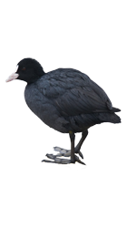
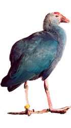

-

Серый журавль — крупная птица, обитающая в Европе и Азии; второй по численности вид журавлей.Это крупная птица: высота около 115 см, размах крыльев 180—200 см; вес самца до 6 кг, самки до 5 кг 900 г. Оперение большей части тела синевато-серое, что позволяет птице маскироваться от врагов среди лесистой местности. Спина и подхвостье несколько темнее, а крылья и брюхо более светлые. Окончания крыльев чёрные. Передняя часть головы, подбородок, верхняя часть шеи и уздечка чёрные либо тёмно-серые. Затылок синевато-серый. По бокам головы имеется белая широкая полоса, начинающаяся под глазами и далее уходящая вниз вдоль шеи. На темени перья почти отсутствуют, а участок голой кожи выглядит красной шапочкой. Клюв светлый от 20—30 см. Ноги чёрные.
-

Лысу́ха, или лы́ска— небольшая водоплавающая птица семейства пастушковых, широко распространённая на обширной территории Евразии, Северной Африки и Австралии. В пределах ареала хорошо узнаваема по белому клюву и белой кожистой бляхе на лбу. Местные названия лысухи: кашкалдак (в Нижнем Поволжье, Казахстане, и в Азербайджане), качкалдак (на Кавказе и в Туркмении).На юго-западе Испании и в Марокко можно встретить схожий вид лысух — хохлатую; у последней поверх бляхи имеются два красных кожистых шарика. Большую часть времени лысухи проводят на воде, чем отличаются от других пастушковых.
-

Султа́нка, или султа́нская ку́рица — околоводная птица семейства пастушковых с ярким сине-голубым оперением. Распространена в восточном полушарии от Европы и Африки до Австралии и Новой Зеландии, главным образом в тропическом и субтропическом климате. На территории России гнездится лишь на западном побережье Каспия к северу до дельты Волги. Населяет берега болот, некрупных озёр и морских заливов с густыми зарослями тростника, осоки или рогоза, где скрытно проводит большую часть жизни. Питается различными частями водных растений, а также в незначительной степени улитками, рачками, насекомыми, икрой рыб и лягушек. Размножается отдельными парами или коммунальными группами, в кладке обычно 3—5 яиц. Во внегнездовой период в Африке образует стаи до 12, а в Индии и Новой Зеландии от 50 до нескольких сотен особей.Крупный пастушок — размером почти с тетерева-косача, телосложением и окрасом напоминает камышницу, однако гораздо более крупную и ярко-раскрашенную. Длина 45—50 см, размах крыльев 90—100 см.